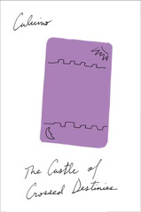

The Castle of Crossed Destinies
Il castello dei destini incrociati
For whatever reason, this is the first Calvino where I had no idea what to expect going in; I knew tarot was involved somehow, but that was it. I ended up seeing parallels to a few other, earlier works -- some of the themes of interpretation and reframing of experiences from Cosmicomics and t zero, for instance (and more on that in a moment) -- but they were taken to a new extreme here.
Really, through the first part (the Castle) especially, I felt like I was reading the result of an experiment, that Calvino had laid out the cards first and then come up with stories to suit (in the same way that we occasionally see "identify this movie from a sequence of emoji" these days). I found it exhilarating to see the trope of stories that intersect -- a side character in one story turns out to be pivotal to someone else's -- turned such that only the symbolic object, the tarot card, was shared between narratives. The Knight of Swords might appear in four tales, but as a _role_ more than a concrete individual, and the storytellers intersect only at the telling, not before (leaving aside Roland and Astolpho)
I felt the Tavern was less successful; something about the more-structured layout from the Castle worked better than the more amorphous setup. I think it had something to do with the predictable symbolic overlaps in the former, where the latter felt more like just reusing the same cards.
Aside from the structural origins, I felt that this had moments of real depth in exploring how we infer stories from what we're told. In this case, the tellers were constrained to use only the cards, and the audience inferred (with no guarantee of accuracy) the stories -- but that's only an extreme version of every story we hear, where we get what the teller says or writes, and we fill in the inevitable gaps on our own. I couldn't help but wonder how many alternative stories could be told from the exact same sequence of cards in each case? Calvino started this work by running each sequence forward and backwards in the Castle, but there are innumerable possible stories from running each sequence over and over again.
And then! When I thought I was done, I read Calvino's note at the back, only to discover that this was the artifact of a generative exercise. But even that pales in comparison to what could have been: the Motel of Crossed Destinies, where tarot cards would be replaced by panels of newspaper comic scrips.
And that is what excited me most about this work, on reflection -- in some ways, this feels like a companion piece to "The Origin of the Birds," but one in which the symbolic imagery has become primary and the story secondary. I am so pleased that this echo of my favorite story from t zero stayed in Calvino's mind long enough to be a part of this collection, and I'm hopeful that there'll be further reminders of it in later works.